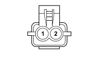

N060 DRIVER'S FRONT DOOR ELECTRIC WINDOW MOTOR (LEFT FRONT DOOR)
- Path
- Electrical equipment > 3 CONNECTORS > N ELECTRIC MOTORS AND ACTUATORS > N060 DRIVER'S FRONT DOOR ELECTRIC WINDOW MOTOR > N060 DRIVER'S FRONT DOOR ELECTRIC WINDOW MOTOR (LEFT FRONT DOOR)
- Kind
- connector pinout (pin -> wire colour -> other end)
- Applies to
- all engines; all production periods
- Interactive page
- https://sloeber94.github.io/elrnDB-fPnd/en/#/169003513
Applies to: all engines; all production periods

Wiring | Colour |
|---|---|
See 30 LEFT FRONT DOOR | NERO (black) |
Pin | Cable | Destination | |||
|---|---|---|---|---|---|
Sec.. | Colour | Node | Connect. | Pin | |
1 | 2,5 | ZN (violet with black stripe) | 1 | ||
2 | 2,5 | Z (violet) | 6 | ||